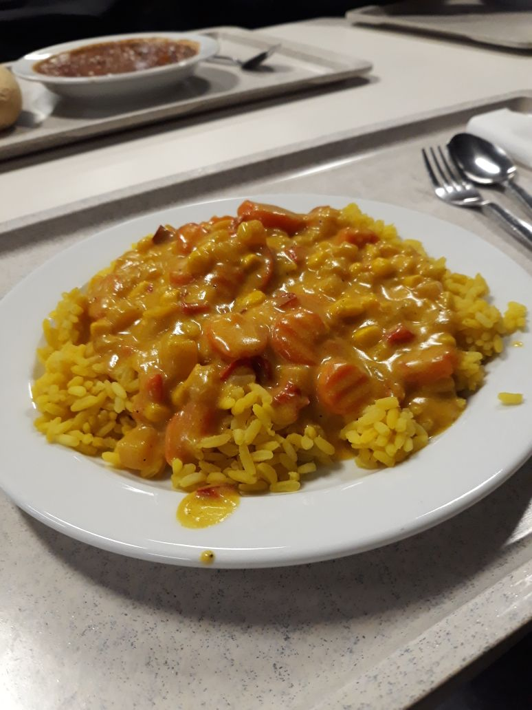

Nochmal ein Hallo von meiner Seite aus! Wie ihr vielleicht schon bemerkt habt, gibt es auf unserem Blog drei verschiedene Themenbereiche. Jede Woche stellt einer von uns etwas auf seiner individuellen Seite hoch. Und diese Woche übernehme ich mal das Kommando über den Blog! :)
Ich möchte mich auch mal kurz vorstellen, bevor es ans Eingemachte geht. Ich bin Tommy und das dritte Fragezeichen im Bunde. Meine Kochkünste sind sehr überschaubar. Ich kann an einer Hand abzählen, wie oft ich schon selber mal was gekocht habe. Deshalb hab ich mich auch dafür entschieden, über das Mensaessen an unserer Uni zu bloggen, denn: selbstgekochte Gerichte = Fehlanzeige...
Ich weiß, ihr könnt es kaum erwarten meine Beiträge zu lesen, so spannend wie das Thema ist :) Keine Sorge, ich werde euch ganz sicher nicht mit den Standardsätzen einen Blogs langweilen. Bei mir werdet ihr viel geboten bekommen! Verlasst euch drauf!
Ich werde in der Regel nicht immer das beste Essen aus der Woche bewerten, sondern das Gericht auswählen, welches sich am meisten von meinen Erwartungen zum Gericht unterschieden hat.
Diese Woche hieß das Gericht: Herbstliches Gemüse-Curry mit Steckrüben, dazu Kurkumareis.
Preis: 1,65 Euro.
An diesem Tag war die Auswahl der Gerichte sehr üppig. Da keines der Gerichte mich so richtig vom Hocker gehauen hat, hab ich mich dazu entschlossen einfach mal günstig zu essen. Da kann man sicher nicht viel falsch machen. Und da hat mich das Gemüse-Curry noch am Meisten angesprochen. Äußerlich machte das Gericht auch ein gutes erstes Bild. Sowohl das Reis als auch das Curry hatten eine angenehme und appetitliche Farbe. Danach ging es weiter mit dem Geschmackstest. Auch hier war der erste Eindruck mehr als zufriedenstellend. Das Reis hatte eine gute Konsistenz, das Curry war lecker und mild, hätte aber etwas Schärfe vertragen können. Insgesamt war es auch nicht zu trocken, die Karotten und die Steckrüben haben den Geschmack dann noch gut abgerundet. An sich kein aufwendiges Gericht. Vielleicht gebe ich meine Kochkarriere doch noch nicht ganz auf. Dieses Gericht gibt mir Hoffnung, dass man aus wenig viel machen kann. Ich werde mein Glück versuchen und es nachkochen. Vielleicht werde ich darüber bloggen. Falls nicht, wisst ihr, dass es nichts wurde... ;)
Die Portion hatte auch die richtige Größe. (Es war ein Gericht, welches von den Mitarbeitern ausgeteilt wurde). Man wurde recht satt. Mein Fazit für das Gericht:
Preis-Leistungsverhältnis ist sehr gut! Für das Geld hätte ich an dem Tag ganz sicher nichts besseres kriegen können!
So, das war's erstmal von mir! Wir sehen uns bald wieder! Stay Tuned! Tommy out!

Gemüse-Curry
Teile den Eintrag mit deinen Freunden:
Woche 2
Heute gab es in der Uni wieder eine große Auswahl an Gerichten. Ich habe lange überlegen müssen, da alles wieder einmal sehr ansprechend war. Letztendlich habe ich mich das Gericht entschieden, welches am Preiswertesten war. Das waren in dem Fall zwei Gemüse – Sticks mit Bratkartoffeln als Beilage. Geschmacklich wurde ich nicht enttäuscht. Man kann sich wirklich nicht beschweren bei den Preisen, zumal die Gerichte meist die Erwartungen sogar übertreffen. Die Bratkartoffeln hätte man zwar noch mehr würzen können, jedoch stellt das kein Problem dar, da man dies selber schnell mit Salz und Pfeffer tun kann. Die Konsistenz der Sticks waren gut und auch geschmacklich mehr als nur genießbar. Die Kräutersoße hat den Geschmack dann gut abgerundet. Alles in allem meines Erachtens eine gute Gerichtewahl, die ich keineswegs bereue. Das Gericht würde ich jederzeit wieder wählen und kann es auch nur jedem empfehlen, der mal zur Abwechslung auch Fleisch verzichten möchte. Top Gericht! Bleibt dran, der nächste Review folgt bald! Bis dann! Schwingt die Kochlöffel! Euer Tommy!
Gemüse-Sticks
Teile den Eintrag mit deinen Freunden:
Woche 3
Zur Abwechslung habe ich mich am heutigen Unitag mal für ein Fleischgericht entschieden. Da fiel meine Wahl auch direkt auf das Hähnchenfilet in Bratensoße. Es gab zwar noch ein anderes Gericht zu Auswahl, jedoch hatte ich an dem Tag mehr Appetit auf Hähnchen. Und da ich Kartoffelpürree sowieso sehr gerne esse, fand ich die Kombination aus Pürree und Filet recht angemessen. Kartoffelpürree kann man nur schwer versauen. Das Hähnchenfilet war sehr schmackhaft und gut gewürzt. Die Soße war meiner Meinung nach auch gut gewählt, hat den Geschmack sehr schön abgerundet. Das Filet war sehr zart. Man konnte es sehr gut schneiden. Auch nicht zu zäh oder sonstiges. Der Kartoffelpürree war zwar sehr schlicht, aber keineswegs schlecht zu essen. Hat mir zusammenfassend sehr gut gefallen und der Preis hat gestimmt. Kann man nicht meckern! Nun denn, das wars erstmal wieder von mir! Bis die Tage! Euer Tommy!
Hähnchen-Filet
Teile den Eintrag mit deinen Freunden:
Woche 4
Gyros – Das war das heutige Gericht des Tages in der Mensa. Ich habe nicht lange gezögert und direkt zugeschlagen! Sieht auf den ersten Blick etwas ungewöhnlich aus, jedoch sagt der Geschmack was ganz anderes aus. Sehr gelungenes Gericht! Dazu die Bratkartoffeln und ein Löffel Tzaziki. Das Fleisch war sehr angenehm zart und leicht zu kauen, hatte dementsprechend genau die richtige Konsistenz. Alles hat sehr frisch geschmeckt, auch das Gemüse! Bratkartoffeln wie immer nicht schlecht, jedoch auch wie immer nicht gut genug gewürzt. Da musste ich bisschen nachhelfen, aber dann war das auch schnell vom Tisch. Preislich war es vergleichbar mit den anderen Gerichten an dem Tag, jedoch denke ich, dass es doch geschmacklich heraussticht, da ich von meinen Kommilitonen eher schlechtere Bewertungen über ihre Gerichte gehört habe. Also war ich sehr zufrieden und konnte mich mit einem gut gefüllten Bauch in die nächste Vorlesung stürzen!
Bis dann, Leute! Euer Tommy!
Gyros
Teile den Eintrag mit deinen Freunden:
Woche 5
Vegetarisches Essen war heute mal wieder angesagt! Natürlich wieder Kartoffeln dazu, so wie ich es am Liebsten habe! Diesmal waren es zwei Gemüse-Frikadellen. Sehr schmackhaft. Die habe ich damals schon immer gerne gegessen. Und auch die Frikadellen aus der Uni haben mich nicht enttäuscht. Schmecken wie immer! Gut! Dazu gab es leider keine Soße, was das ganze Gericht etwas trocken gestaltet hat. Jedoch hat es der Geschmack am Ende dann doch retten können. Kartoffeln waren diesmal überraschenderweise versalzen. Wie das mal passieren konnte, frag ich mich heute noch! Aber wie dem aus sei, alles in allem sehr sehr lecker! Hat satt gemacht. Würde ich jedem empfehlen, der Gemüse-Frikadelle gerne hat und auch ein Kartoffelliebhaber ist wie ich!
In dem Sinne, bis dann! Euer Tommy!